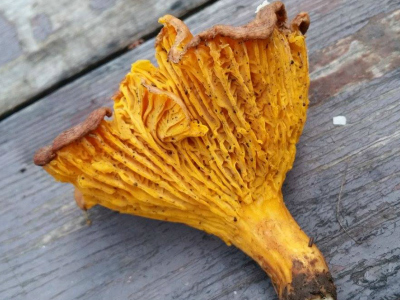
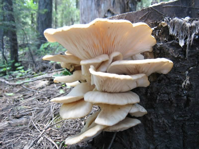
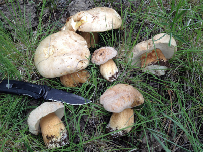

Photo by Britt Flowers - White Mountain Range of Arizona
There are thousands of species of wild mushrooms that exist throughout Arizona. Some are edible, while many are not. When it comes to edibility, being armed with knowledge is imperative to your health as some species can be deadly. Foraging for mushrooms is not only a lot of fun and a great learning experience... but also a way to feel more connected to nature and the food it has to offer. Nothing is more gratifying than stumbling upon a thick patch of delicious Chanterelles in the forest that you can cook up for dinner. The key to mushroom identification is to keep handy guidebooks while foraging and take thorough examination of all parts of the fungi. Further clarification can be made via spore printing, or asking a local mycologist. It is best to only consume a tiny amount of your first find of any fungi and wait. This allows you to be sure that you have properly identified the mushroom and that no ill effects will be had. Once the mushroom has passed the edibility test, enjoy the rest!
| Tools For Foraging | Tool Uses |
|---|---|
| A Basket | A sturdy basket is necessary for foraging as the natural holes that exist within it's weaving allow for microscopic spores to escape from the mushrooms and fall to the ground while you are walking through the forest. This keeps the fungi population of that area thriving. Mesh bags and baskets are also perfectly acceptable. |
| A Knife | A knife is important for properly cutting the stem at the base of the mushroom to retrieve it from the ground. This is preferable to ripping it out of the ground, as it helps to prevent disruption of the underground mycelium network. |
| A Brush | A haired brush helps to remove dirt and particles from the mushroom while harvesting, without causing damage or bruising. |
| A Guidebook | A mushroom guidebook is best to carry on your foray to allow for identification. Cell phone service is not always readily available out in the forest, so having a guidebook that is specific to the species that inhabit your area is the best way to help you identify the fungi. |
Here are some delicious species of mushrooms you can forage for in Arizona!

Photo Credit: Britt Flowers

Photo Credit: www.tanelorn.us

Photo Credit: Arizona Mushroom Forum